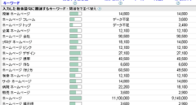
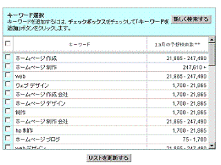
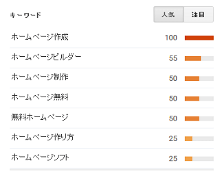
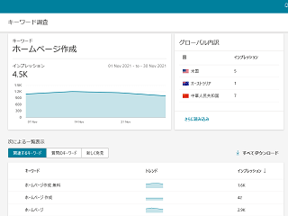
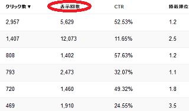
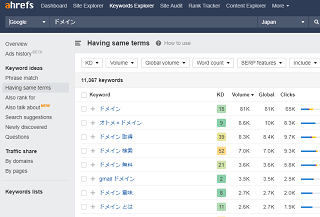
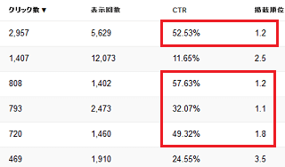

キーワードの月間検索回数を調べる方法
ホームページを作成する際、まずはサイトのテーマに関連するキーワードをチェックしておきましょう。同じ意味だったとしても、どのキーワードを選択するのかによって、のちのちのアクセス数に大きく影響してきます。
例えば、当サイトは「ホームページを初めて作成する際のハウツーサイト」ですが、「サイトの作り方」や「ウェブ作成」、あるいは「ホームページ入門」など、選択できそうなキーワードは様々あり、それぞれの検索回数にも違いがあります。
- 「ウェブサイト 作成」 550,000回/月
- 「hp 作成」 301,000回/月
- 「ホームページ 作り方」 49,500回/月
- 「ホームページ 入門」 1,900回/月
人によっては「ホームページ」ではなく、「ＨＰ」や「ウェブサイト」と呼んでいる人もいますし、単純に「サイト」と呼ぶ人もいます。あるいは検索回数は少ないものの、「ほむぺ」で検索する人もなかにはいます。
月に１回しか検索されないようなキーワードを選んだ場合、仮に１位に上位表示されたとしてもアクセスはほとんどやってきません。同じようなニュアンスの場合、検索回数の多いキーワードを意図的に選択し、ドメイン名やタイトル、もしくは本文中に盛り込んで作成していくとよいでしょう。
キーワードの検索回数をチェックするツール
上記キーワードの月間検索回数は、当ホームページの開設当初に以下の「アドワーズ」や「オーバーチュア」で調べた数値になります。
けれども、現在、これらは「Google広告」や「Yahoo!広告」で広告を配信しているユーザーしか利用することができません。
■アドワーズのキーワードプランナー

アドワーズは、企業などがグーグルの検索結果に広告を配信するためのサービスです。広告主が検索結果に広告を配信する際、検索回数をチェックしながら配信しますが、その際に使用されているツールに「AdWords キーワード プランナー」があります。
（※追記：こちらは「Google広告」ユーザーの限定ツールになりました。）
■ヤフーのオーバーチュア

ヤフーの場合でも、オーバーチュアに参加すると「キーワードを追加 - キーワードを検索」の欄でおおまかな検索回数を調べることができます。オーバーチュアはヤフーの検索結果に広告を配信するためのサービスになります。
（※追記：オーバーチュアは「Yahoo!広告」へ移行されました。）
そのため、企業サイトの場合は上記の「Google広告」や「Yahoo!広告」などのリスティング広告に登録し、お試しで広告を配信して利用してみるのが一番手っ取り早いかと思います。
一方、一般の個人ユーザーは上記のツールが使えないため、代替としてグーグルトレンドでチェックされてみるとよいでしょう。
■グーグルトレンドで調べる
→ グーグルトレンド

月間検索回数の実数は確認できませんが、関連キーワードの相対的な人気度を比較することができます。同じような意図のキーワードの場合、人気の高い方を選択されるとよいでしょう。
■Bing Webmaster Tools
→ Bingウェブマスターツール登録のメリット

マイクロソフトのBing Webmaster Toolsには、サイドバーの「SEO」の箇所に「キーワード調査」のツールがあり、こちらでキーワードのインプレッション数を調べることが出来ます。無料で利用することができ、個人サイトでも使えますが、検索回数ではなく、インプレッションの表示回数となっているため精度は落ちるかと思います。
けれども、キーワードの候補のリストについては、Google検索とほぼ同じような結果が出てきますので、個人ユーザーはこちらが使いやすいかもしれません。
■Search Console（旧ウェブマスターツール）
→ Google Search Consoleに登録して最適化

また、Search Consoleはグーグルの無料ツールですが、自サイトに流入するアクセスの検索クエリ（検索キーワード）と検索結果での表示回数を調べることができます。特定のキーワードで何回表示され、そのうち何回クリックされてアクセスにつながったのかを調べることができます。
例えば、「検索回数10万回」のキーワードにて、検索結果で「自サイトが1万回表示」され、そのうち「1,000回クリック」されてアクセスにつながったというような意味になります。そのため、このツールでは1万回などの自サイトの表示回数はわかりますが、10万回などのそのキーワードの絶対的な検索回数はわかりません。
検索順位で２ページ目以降の場合、ほとんど表示されないかと思いますが、自サイトの表示回数は少なかったとしても、検索回数自体は多いことも考えられます。
そのため、キーワードの絶対的な検索回数を調べるにはあまり向いていないかもしれません。
■ahrefs（エイチレフス）
→ ドメインのチェックツールを比較
こちらは有料のツールにはなりますが、ドメインのチェックツールにahrefsがあります。こちらの「Keywords Explorer」の機能で検索ボリュームをチェックすることができます。

有料のツールには、他にもMozやMajesticなどもありますが、日本語での検索キーワードのチェックについては、こちらの「ahrefs」の方が使いやすいと思います。
ビックキーワードと複合キーワードの違い
膨大な検索回数のあるキーワードは「ビックキーワード」とよばれていますが、このビックキーワードで上位に表示されると膨大なアクセス数がやってきます。けれども、ビックキーワードは競合サイトが多くなるため、検索エンジンでの上位表示はより困難になります。
一方で「複合キーワード」の場合、競合するサイトが少なくなりますので、比較的、検索エンジンに上位表示されやすくなります。
例えば、当サイトの場合、「ホームページ」をビックキーワードとすれば、「ホームページ 作り方」は複合キーワードになりますが、キーワードが追加されるごとに検索回数は大幅に減少するものの、検索結果では上位に表示されやすくなります。
加えて、キーワードが追加されるごとに訪問者の関心が限定されていくため、より関心度の高いアクセスを呼び込むことができるようになります。
■検索プロセスの例：
例えば、起業した人が自分で会社のホームページを作ろうと考えたとします。
そこで「ホームページ」などと検索したものの、芸能人のホームページばかりがヒットして探している情報がなかなか出てきません。次に、キーワードを追加して「ホームページ 作り方」と検索しましたが、アクセスしたサイトも個人向けの情報ばかりで内容が微妙に違っています。
さらに「ホームページ 作り方 会社」などとキーワードを追加して検索することで、ようやく探している情報がヒットしたとします。
この場合、３回の検索行為を経てようやく意図する検索結果にたどり着くわけですが、キーワードがひとつ加わるごとに、より関心の高い検索結果に近づいていくようになります。
そのため、単一のビックキーワードではアクセス数が多いものの、同時に意味のないアクセス数が多くなったり、離脱率も高くなる傾向があります。
一般的に、複合キーワードほど関心の高い訪問者が増える傾向にあり、また商品を販売するホームページの場合は購入率も高くなります。
・ビックキーワード → アクセス数：多い → 関心度：薄い → PVや購入率：低い
・複合キーワード → アクセス数：少ない → 関心度：高い → PVや購入率：高い
むやみにビックキーワードを狙うよりも、はじめは２つか３つほどの「複合キーワード」からはじめ、少ないながらも関心の高い訪問者を呼び込んだ方が楽しみながらホームページを作ることができるはずです。
検索回数と実際のアクセス数の誤差はどのくらい？
検索回数が多いキーワードで１位に表示されたとしても、まるまるその回数分のアクセスがやってくるわけではありません。
けれども、２位や３位よりも、やはり１位に表示されていた方がアクセス数は多くなる傾向があります。一般的に、1位では15%～50%程度のクリック率といわれてますが、2位や3位の場合はそれよりも少ないのが実際のところです。
上記のSearch Consoleのデータの例でいいますと、「CTR」（Click Through Rate）はクリック率の意味となりますが、「1.1位～1.8位」で32％～57％とバラツキがあります。

例えば、掲載順位「1.2位」で5,629回表示されて2,957回クリックされれば、「2,957÷5,629×100」でCTRのクリック率は52.53％となっています。「2.5位～3.5位」あたりでは11％～24％などとなり、クリック率はかなり低くなります。
そのため、仮に１万回の検索回数の場合、１位でも多くて5,000アクセス程度、複合キーワードなども含めて１万アクセス程度になるかもしれません。１位よりも上はないため、一般的に検索エンジンからサイトに呼び込めるアクセス数は、メインキーワードの月間検索回数あたりで頭打ちとなります。
また、２ページ目以降の場合はほとんどアクセス数が見込めませんので、数人程度のアクセス数しか見込めないかもしれません。
けれども、タイトルの付け方によってもクリック率は変わってきます。よく、「あなたが～するための５つの理由」などのタイトルを見かけますが、タイトルの付け方を工夫することでもクリック率が高くなります。
たとえ２位や３位だったとしても、クリック率が50％程度あれば、それは１位と変わりはないため、できるだけ、魅力的でキャッチーなタイトルにすることをおすすめします。
また、アクセス解析を設置して、検索回数から予想されるアクセス数と実際の差を把握しつつ、反応が悪い場合には、タイトル名やページの説明文などを修正していくとよいでしょう。